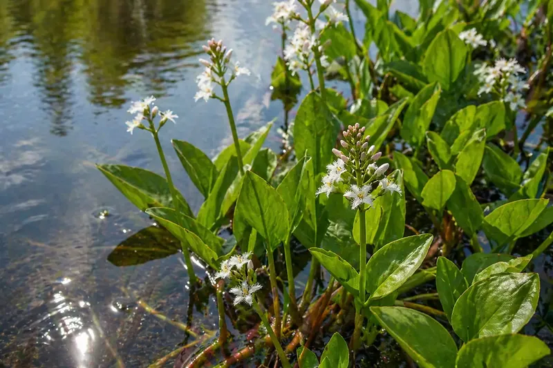

Растения для пруда
Вахта трёхлистная
Цена и наличие
- P935 BYN / шт.В наличии
Данные на 23.11.2026.
Характеристики
- Преимущества
- Улучшает качество воды, устойчива к низким температурам, проста в уходе
- Период цветения
- Май-июнь
- Размер листьев
- 5-15 см
- Размер цветков
- 1-2 см
- Размер корневища
- 50-100 см
Описание
Вахта трёхлистная, или трилистник водяной, является идеальным растением для пруда, благодаря своим декоративным и экологическим свойствам.
Вахта трёхлистная, или трилистник водяной, является идеальным растением для пруда, благодаря своим декоративным и экологическим свойствам. Это многолетнее травянистое растение произрастает в болотистых и влажных местах, таких как берега рек, озёр и прудов, и прекрасно адаптируется к водной среде. Одним из главных преимуществ вахты трёхлистной для пруда является её способность улучшать качество воды. Растение активно поглощает из воды избыточные питательные вещества, такие как нитраты и фосфаты, что помогает предотвращать цветение воды и развитие водорослей. Это способствует поддержанию чистоты и прозрачности воды в пруду, создавая благоприятные условия для обитателей водоёма. Вахта трёхлистная также играет важную роль в создании естественного биотопа. Её густые корневища и листья предоставляют укрытие и места для нереста рыб и других водных обитателей. Это способствует увеличению биоразнообразия и поддержанию здоровой экосистемы пруда. Кроме того, трилистник водяной обладает декоративными качествами. Его красивые трёхлистные листья и нежные бело-розовые цветы придают пруду эстетическую привлекательность. Растение цветёт в конце весны и начале лета, создавая живописные пейзажи и радуя глаз. Уход за вахтой трёхлистной не требует особых усилий. Она хорошо растёт на солнечных и полутенистых участках, предпочитая мелководье и влажные почвы. Растение устойчиво к низким температурам и может зимовать подо льдом, что делает его идеальным выбором для прудов в различных климатических условиях.